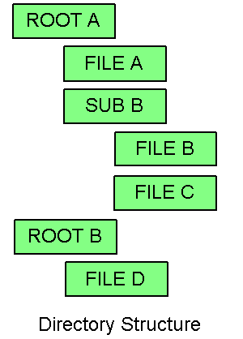
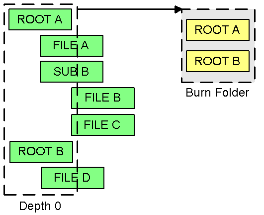
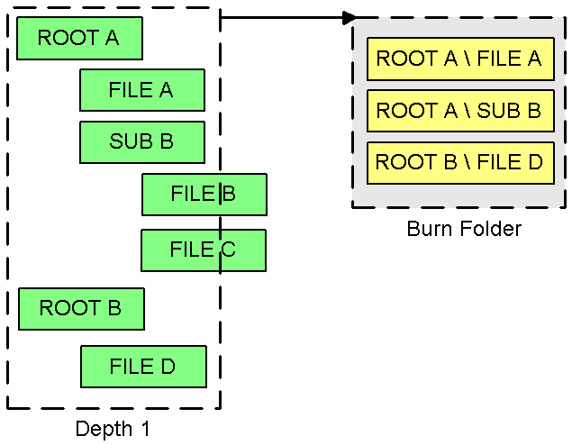
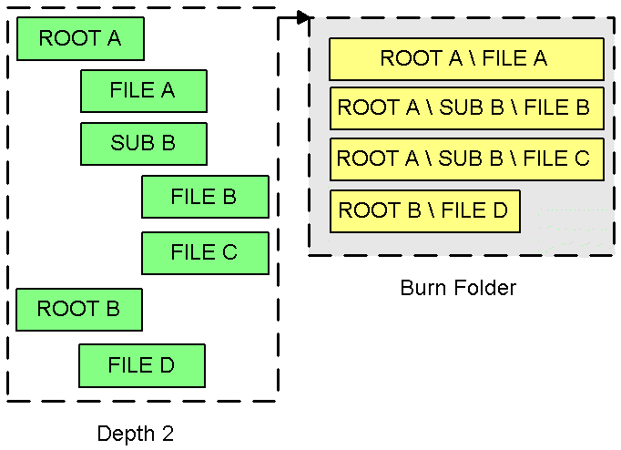
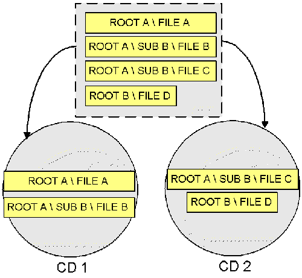

With folder splitting, you can instruct BTTB to split up folders to a certain level, on which the folders are kept intact.
Let's take a simple example, illustrated in the picture below - the green boxes are folders, subfolders and files:

Say you want to burn all folders and subfolders.
If you would start from the lowest directory level (depth 0), BTTB will take each
file/folder inside it (root a, root b) as an undivideable
whole and will try to fit each of these entities on the
CD. This is illustrated in the figure below. The yellow boxes are the
undivideable entities that BTTB will try to write to CD. Of course,
chances are this won't fit.

When you enter a splitting depth of 1, BTTB will split up the root a and root b folders and only keep the files/folders within sub b together, as illustrated below. BTTB now has 3 undivideable entities that it can put on different CD's. The chances that this will fit are better.

Now, if this still doesn't bring a proper solution, we can even go one depth below that:

BTTB now has 4 undivideable entities it can choose among. It will have less trouble finding a solution. The result could be something like illustrated below:

Each of the entities can end up on different CD's. If you want certain files in one subfolder to stay together, such as file b and file c in this example, you could have a problem. There is a way to customize BTTB a little more however, telling it to keep certain files together at all costs. Look at the chapter on group creation for a further explanation.
By selecting Keep splitted folders, in combination with the Move to folder option, the folders are kept in their original splitted root folders. This has no effect on creating ISO's, whereby files and folders are always stored under their complete paths (ie. "root a \ sub b \ file b").
We strongly recommend to first play with this to make sure you understand it, making sure Move to folder is not checked.